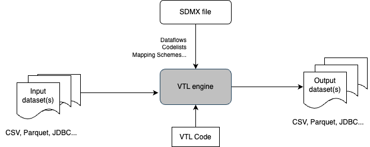
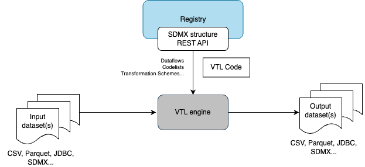

UNECE workshop
Paris
SDMX / VTL with Trevas
BPE use case
Permanent Database of Facilities

- (1) validation of municipality code in input file
- (2) clean BPE input database
- (3) BPE aggregation by municipality, type and year
- (4) BPE aggregation by NUTS 3, type and year
- (5) BPE validation of facility types by NUTS 3
- (6) prepare 2021 census dataset by NUTS 3
- (7) extract dataset on general practitioners from BPE by NUTS 3 in 2021
- (8) merge practitioners & legal population datasets by NUTS 3 in 2021 and compute an indicator
v1 - Operational today in Trevas

v2 - Possible extensions
